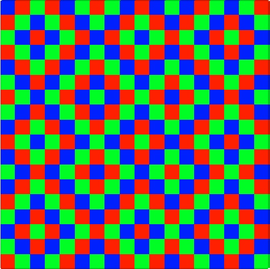

|
 |
Large-scale convex nonsmooth optimization
Optimization is everywhere. The difficulty stems from the very large number of variables and the use of nonsmooth functions.
Main papers:L. Condat, D. Kitahara, A. Contreras, and A. Hirabayashi, “Proximal Splitting Algorithms for Convex Optimization: A Tour of Recent Advances, with New Twists,” SIAM Review, 2022, to appear. PDF
L. Condat, G. Malinovsky, and P. Richtárik, “Distributed Proximal Splitting Algorithms with Rates and Acceleration,” Frontiers in Signal Processing, 2021. PDF
G. Malinovsky, D. Kovalev, E. Gasanov, L. Condat, and P. Richtárik, “From local SGD to local fixed point methods for federated learning,” ICML, July 2020. PDF Webpage
-
P. L. Combettes, L. Condat, J.-C. Pesquet, and B. C. Vũ, “A forward-backward view of some primal-dual optimization methods in image recovery,” IEEE ICIP, Oct. 2014, Paris, France. PDF
-
L. Condat, “A primal-dual splitting method for convex optimization involving Lipschitzian, proximable and linear composite terms,” J. Optimization Theory and Applications, vol. 158, no. 2, pp. 460-479, 2013. PDF
L. Condat, “Fast projection onto the simplex and the l1 ball,” Mathematical Programming Series A, vol. 158, no. 1, pp. 575-585, July 2016. PDF. Supplementary material: C code condat_simplexproj.c condat_l1ballproj.c . Matlab code: proj_simplex_l1ball.m
-
L. Condat, “A direct algorithm for 1D total variation denoising,” IEEE Signal Proc. Letters, vol. 20, no. 11, pp. 1054-1057, Nov. 2013. PDF. C file: condat_fast_tv.c. For use in Matlab, mex files made by Stephen Becker.
New, 2017: A new, even better (linear time) algorithm: Matlab code and C code
Super-resolution
Super-resolution consists in
recovering a signal with a better precision than what seems possible
given the resolution limit of the available measurements, by making use
of prior knowledge on the signal structure.
Main papers:L. Condat, “Atomic norm minimization for decomposition into complex exponentials and optimal transport in Fourier domain,” Journal of Approximation Theory, vol. 258, Oct. 2020. PDF
K. Polisano, L. Condat, M. Clausel, V. Perrier, “A convex approach to super-resolution and regularization of lines in images,” SIAM Journal on Imaging Sciences, vol. 12, no. 1, pp. 211-258, 2019. PDF
-
L. Condat and A. Hirabayashi, “Cadzow denoising upgraded: A new projection method for the recovery of Dirac pulses from noisy linear measurements,” Sampling Theory in Signal and Image Processing, vol. 14, no. 1, pp. 17-47, 2015. PDF. Matlab file: pulses_recovery.m
-
L. Condat, J. Boulanger, N. Pustelnik, S. Sahnoun, and L. Sengmanivong, “A 2-D spectral analysis method to estimate the modulation parameters in structured illumination microscopy,” IEEE ISBI, Apr. 2014, Beijing, China. PDF.
Multispectral image processing
Hyperspectral imaging devices
produce a stack of images, where each image represents information in a
narrow band of the electromagnetic spectrum. Processing such data
requires modelling the spatial and spectral interactions of the
physical elements composing the scene.
Main papers:A. Tiard, L. Condat, L. Drumetz, J. Chanussot, W. Yin, and X. Zhu, “Robust linear unmixing with enhanced sparsity,” IEEE ICIP, Sept. 2017, Beijing, China. PDF
X. He, L. Condat, J. Bioucas-Dias, J. Chanussot and J. Xia, “A new pansharpening method based on spatial and spectral sparsity priors,” IEEE Transactions on Image Processing, vol. 23, no. 9, pp. 4160-4174, Sept. 2014. PDF.
M. M. Khan, J. Chanussot, L. Condat, and A. Montanvert, “Indusion: Fusion of multispectral and panchromatic images using induction scaling technique,” IEEE Geoscience and Remote Sensing Letters, vol. 5, no. 1, pp. 98-102, Jan. 2008. PDF
Color image processing for digital photography
In digital cameras, the sensor is overlaid with an array of color filters. The choice of these filters and of the reconstruction method from the partial and noisy information acquired, in order to obtain sharp full color images, are difficult but crucial problems.
Main papers:-
L. Condat, “A Generic Proximal Algorithm for Convex Optimization - Application to Total Variation Minimization,” IEEE Signal Proc. Letters, vol. 21, no. 8, pp. 1054-1057, Aug. 2014. PDF. Matlab files: optimization.zip
-
L. Condat and S. Mosaddegh, “Joint Demosaicking and Denoising by Total Variation Minimization,” IEEE ICIP, Sept. 2012, Orlando, USA. PDF. Matlab files: denoisaicking_TV_Condat.zip
-
L. Condat, “A new color filter array with optimal properties for noiseless and noisy color image acquisition,” IEEE Transactions on Image Processing, vol. 20, no. 8, pp. 2200-2210, Aug. 2011. PDF. Matlab files: denoisaicking_Condat.zip
-
L. Condat, “Color filter array design using random patterns with blue noise chromatic spectra,” Image and Vision Computing, vol. 28, no. 8, pp. 1196-1202, Aug. 2010. PDF. Matlab files: CFArandom1.m CFArandom2.m
Note: if you want to use a random color filter array (CFA) with blue noise properties without the hassle of generating it, consider as a very good approximation this 18x18 pattern with periodization (its cyan-magenta-yellow counterpart is very good as well):
 (CFA_Condat_18.tif)
Sampling and reconstruction in linear shift-invariant
spaces
Slides summarizing my contributions on the subject: PDF